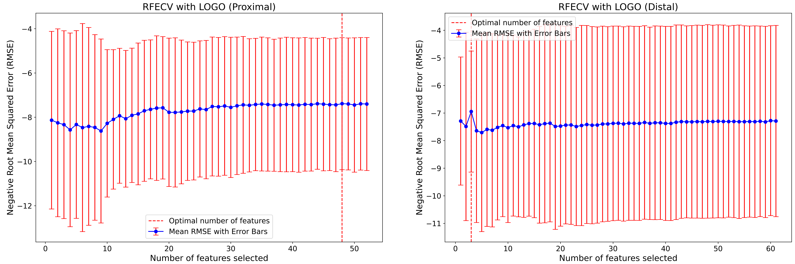
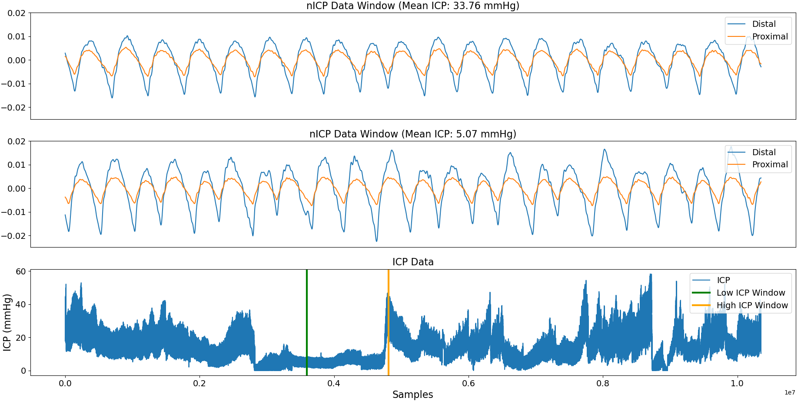

This study investigates the feasibility of utilising photoplethysmography signals to estimate continuous intracranial pressure (ICP) values in patients with traumatic brain injury.
Published in Biomedical Signal Processing and Control
Evaluating the effectiveness of non-invasive intracranial pressure monitoring via near-infrared photoplethysmography using classical machine learning methods
Project Details / Background
A clinical dataset was compiled, comprising synchronised data from a non-invasive optical sensor and an invasive gold standard ICP monitor from 27 patients.
Two datasets, derived from short and long-distance NIRS, were generated from this data. For each dataset, 141 features were extracted for every one-minute window of non-invasive data.
A total of 5 classical regression models were implemented, optimised and assessed. The study aimed to evaluate the models’ performance for the continuous, non-invasive monitoring of ICP using a leave-one-patient out cross validation approach.
Feature selection was conducted using recusive feature elimination, using a leave one group out cross validation scheme. Each models' hyperparameters were opitmised using Optuna a Bayesian optimisation framework. The 5 models were trained and evaluated on both the long and short distance NIRS data. The lowest mean absolute error (MAE) and root mean squared error (RMSE) were obtained using features derived from long-distance NIRS. A Random Forest (RF) model achieved the lowest MAE and RMSE of 5.030 and 4.067 mmHg respectively. The RF exhibited wide limits of agreement with the reference method. This was reflected in the 95% Bland–Altman limits of agreement, ranging from 8.782 to -8.487 mmHg.
This research brings novel insights to non-invasive ICP monitoring through the investigation of the largest clinically collected NIR-PPG dataset from patients with severe TBI and invasive ICP monitoring and the investigation into the possibility of predicting ICP non-invasively using exclusively morphological and time series features from NIRS-PPG. This research area is nascent and evolving and future work is required. The outcomes of this study provide a solid groundwork for future research within this domain.
Feature selection was conducted using recusive feature elimination, using a leave one group out cross validation scheme. Each models' hyperparameters were opitmised using Optuna a Bayesian optimisation framework. The 5 models were trained and evaluated on both the long and short distance NIRS data. The lowest mean absolute error (MAE) and root mean squared error (RMSE) were obtained using features derived from long-distance NIRS. A Random Forest (RF) model achieved the lowest MAE and RMSE of 5.030 and 4.067 mmHg respectively. The RF exhibited wide limits of agreement with the reference method. This was reflected in the 95% Bland–Altman limits of agreement, ranging from 8.782 to -8.487 mmHg.
This research brings novel insights to non-invasive ICP monitoring through the investigation of the largest clinically collected NIR-PPG dataset from patients with severe TBI and invasive ICP monitoring and the investigation into the possibility of predicting ICP non-invasively using exclusively morphological and time series features from NIRS-PPG. This research area is nascent and evolving and future work is required. The outcomes of this study provide a solid groundwork for future research within this domain.
Image Gallery

A figure with two subplots illustrating recursive feature elimination plots applied to a subset of features. The plots demonstrate the variation in negative Root Mean Squared Error as the number of features changes. A dashed red line represents the number of features with support returned by recursive feature elimination. The left subplot corresponds to the proximal dataset, while the right subplot corresponds to the distal dataset.
 A bar chart representing the Bland–Altman upper and lower limits of agreement for each model, calculated at the 95% confidence level. The bars in the chart indicate the upper and lower limits of agreement, representing the range within which most of the differences between predicted and actual values lie with 95% confidence.
A bar chart representing the Bland–Altman upper and lower limits of agreement for each model, calculated at the 95% confidence level. The bars in the chart indicate the upper and lower limits of agreement, representing the range within which most of the differences between predicted and actual values lie with 95% confidence.

A three-subplot figure illustrating non-invasive ICP signal data. Two subplots showcase a 30-second window each, with one capturing data from a period of elevated ICP and the other from a period of low ICP. The third subplot presents the entire ICP dataset, emphasising the sampled areas.